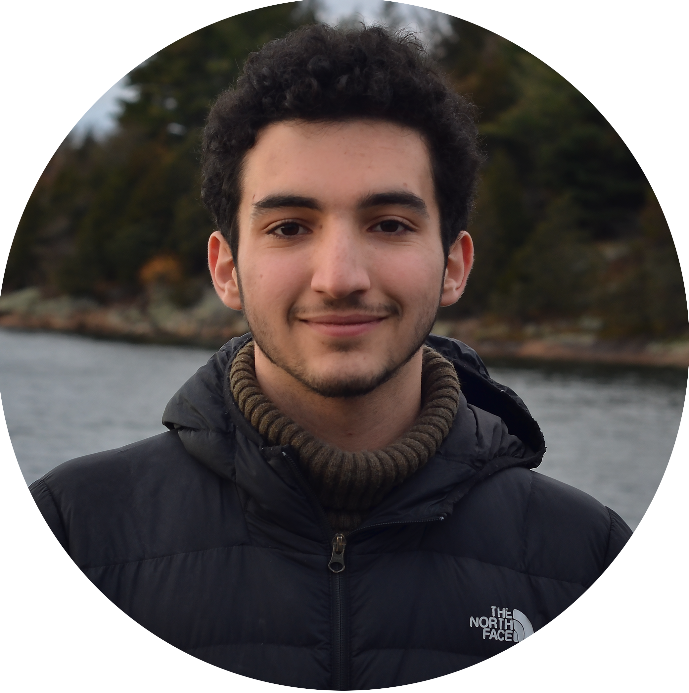

I am an undergraduate student at Harvard University in the class of 2026, studying towards a concurrent BA/MS in Computer Science and Mind, Brain, and Behavior, and advised by Prof. Stuart Shieber.
I'm broadly passionate about the interface between language and thought, with a focus on the inductive biases that favor language learning and reasoning in both humans and machines.
I'm also interested in AI safety from both a technical (interpretability, control) and a political perspective, and work with the AI Safety Student Team at Harvard towards these goals.
I am currently affiliated with the Computational Cognitive Science Group at MIT Brain & Cognitive Sciences and the Language and Intelligence Group at the MIT Computer Science and AI Lab, where I am fortunate to be supervised by Gabriel Grand, Prof. Joshua Tenenbaum, and Prof. Jacob Andreas.